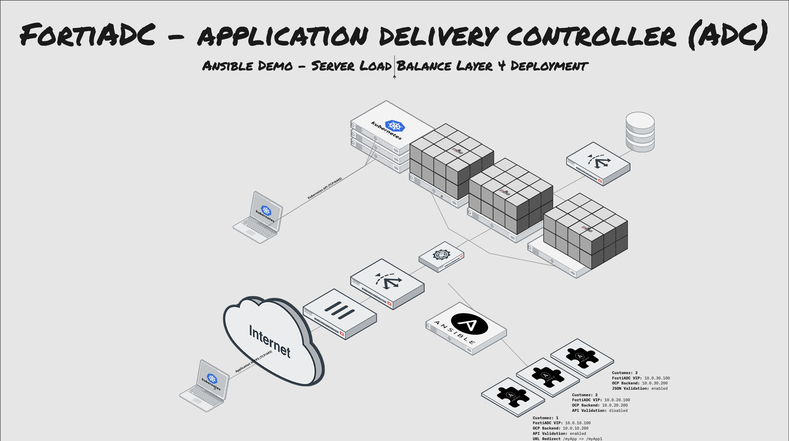

The following is an example of how complexx taks such the deployment of a Server Load Balancer with Realservice Pool, Real Servers, Certificates and Healthceks can be automated with Ansible Playbooks.

The Ansible Modules are made OpenSource by Fortinet and are available on Ansible Galaxy and the Ansible Galaxy FortiADC Collection Documentation can be found on Fortinet Developer Network